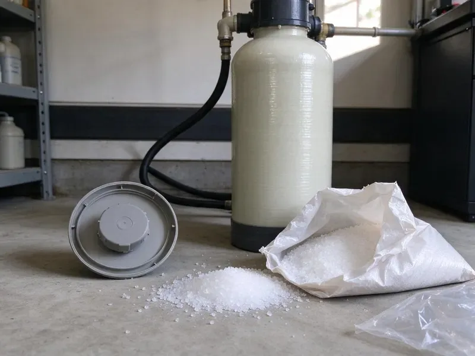

Flood Restoration in Marietta, GA
Our flood restoration crews in Marietta, GA bring pumps, extractors and drying equipment to restore your home after a flood.
- Mud and Debris Cleanup
- Rapid Emergency Response
- Expert Water Extraction
- Professional Water Extraction

Get Flood Water Out and Your Life Back on Track in Marietta, GA.
Our team is ready 24/7 to respond to your flood emergency and begin the restoration process.
Flood Restoration in Marietta, GA From Pump-Out to Rebuild
HGR Plumbing understands the urgency and stress that come with flood damage in your Marietta home. Our team is equipped with professional tools and expertise to tackle water extraction, drying, and restoration, so your property is safe and sound again.
Our expertise includes:
- Antimicrobial treatment, odor control and structural drying
- Professional water extraction and drying equipment.
- Submersible pump and truck-mount extraction for deep standing water

Additional Plumbing Maintenance Services in Marietta, GA
Our maintenance and specialty plumbing services in Marietta, GA catch small problems before they become emergencies.


Customers
Why Choose HGR Plumbing for Flood Restoration in Marietta, GA?
Choosing HGR Plumbing means partnering with a team that has deep experience in flood restoration and understands the challenges properties in Marietta, GA face.
- Safe Sanitizing, Contaminated areas are cleaned and treated to cut down bacteria and odors.
- Rapid Response, Our emergency teams are dispatched right away to address flood situations, reducing the overall impact of water damage.
- Full Recovery, We handle drying, plumbing repairs and rebuild work in one project.
Citywide Coverage
From single rooms to entire homes and commercial buildings, we restore flooded spaces across Marietta. We serve homeowners, landlords, HOAs and businesses.
Experienced Team
Our flood restoration team at HGR Plumbing brings years of hands-on experience dealing with all types of water damage. We've seen it all, from minor leaks to major property floods, and know exactly how to handle each situation effectively.
Safety-First Approach
HGR Plumbing prioritizes the safety of your family and our team throughout the flood restoration process, following strict protocols to prevent further damage and stay code compliant. We also focus on preventing health risks associated with water damage, like mold.
Trusted Certified Marietta Plumbing Services Professionals
At HGR Plumbing, we take pride in providing licensed, certified plumbing services throughout Marietta, GA. Backed by recognized industry credentials, our experienced plumbers combine technical skill with genuine customer care. Whether it is repair, installation, or maintenance, we follow strict safety and quality standards to deliver lasting results you can trust.
Call Us Now PHCC Plumbing Contractor Recognition
PHCC Plumbing Contractor Recognition Better Business Bureau (BBB) Accreditation
Better Business Bureau (BBB) Accreditation Angi Certified Pro
Angi Certified Pro ISO 9001 Quality Management Certification
ISO 9001 Quality Management CertificationComprehensive Flood Restoration Services in Marietta, GA
Emergency Water Extraction in Marietta
When a flood occurs, fast water extraction is critical to minimize damage. Our emergency teams in Marietta are equipped with powerful submersible pumps and industrial wet vacuums to remove thousands of gallons of water fast. This rapid response is essential for preventing water from soaking into walls, flooring, and structural elements, which can lead to expensive long-term problems.

Garage and Ground-Level Flooding in Marietta, GA
Garages often take the brunt of storm runoff because they sit at driveway level. Flood water can damage water heaters, laundry equipment, stored items and drywall. We remove water and mud, check water heater burners and controls for damage and dry the space. Damaged appliances and plumbing are repaired or replaced.
Sump Pump Installation for Flood Prevention in Marietta, GA
To prevent future flooding in basements or crawl spaces, we offer professional sump pump installation. Coastal and low-lying parts of Georgia face flooding risk during hurricane season, and saturated ground can push water into crawlspaces and basements. Our plumbers can recommend and install various sump pump models, including pedestal and submersible pumps from brands like Zoeller and Wayne. A reliable sump pump provides an important line of defense against groundwater intrusion.
Structural Drying and Dehumidification in Marietta, GA
After water extraction, thorough structural drying is essential to prevent mold growth and further damage to your property in Marietta, GA. We use commercial-grade dehumidifiers, air movers, and specialized drying equipment to remove moisture from hidden areas. Our technicians monitor moisture levels in walls, subfloors, and insulation, making sure everything is completely dry to industry drying standards.
Storm Flood Cleanup in Marietta
Summer storms can drop heavy rain in a short time, sending runoff into garages, patios and living spaces. Coastal and low-lying parts of Georgia face flood risk during hurricane season, and saturated ground can push water into crawlspaces and basements. Hard or saturated ground absorbs water slowly, so flooding can happen fast. We pump out water, shovel out mud and silt and clean affected surfaces. Then we set up drying equipment and monitor until the structure is dry.
Thermal Imaging and Moisture Detection in Marietta, GA
Hidden moisture can cause ongoing damage and mold if not detected. We use thermal imaging cameras and moisture meters to locate exact locations of water intrusion and saturation within walls, ceilings, and flooring. This non-invasive technology allows us to find hidden pockets of moisture that might otherwise be missed, for a complete and effective drying process in your Marietta home.
Foundation Leak Repair after Flooding in Marietta
Homes, particularly those with slab foundations, can develop foundation issues from ground saturation after heavy rains or flooding. The southern coastal plain has looser, sandy soil and a higher water table, so drainage and root intrusion are bigger concerns there than shifting. Our flood restoration experts in Marietta can assess and repair foundation leaks caused by water damage. This often involves precision leak detection and proven repair techniques to protect the structure of your home.

Mold Prevention and Remediation in Marietta
One of the most serious consequences of flooding is mold. We apply antimicrobial treatments to affected areas to inhibit mold growth and eliminate existing colonies. Our team is trained in safe mold remediation practices, including containment and air filtration, protecting your family's health. Early action after a flood is key to stopping widespread mold issues, especially in warm, damp weather.
Flood Restoration Near Me in Marietta, GA
When a storm or burst pipe floods your home, help needs to arrive fast. Our crews are based nearby and keep pumps, extractors and drying equipment ready during storm season. That means faster water removal and less damage.
We pride ourselves on being the go-to flood restoration experts for residents and businesses across Marietta. The southern coastal plain has sandier soil and a higher water table, so drainage and root intrusion are bigger concerns there than shifting. Our local knowledge means we understand how that can make water damage worse in our area.
HGR Plumbing at a Glance
- Licensed and insured plumbers serving Marietta, GA
- 24/7 emergency service with same-day scheduling
- Clear written estimates, no hidden fees
- 4.9-star rated by 357+ Georgia customers
Marietta Map
Marietta Information
- Population
- 62,769
- Area codes
- 770/404/678
- Service area
- Marietta and communities within 40 miles
- Nearby
- Smyrna, Sandy Springs, Roswell, Dunwoody
Flood restoration is essential for homes in Marietta, GA because damp conditions speed up mold growth and wet slabs and framing can trap moisture and weaken the structure if not addressed quickly.
Expert Services
Trust our professionals for reliable HGR Plumbing solutions in Marietta, GA.
Our Specialized Plumbing Services in Marietta, GA
At HGR Plumbing, we provide a complete range of plumbing services across Marietta, GA. From leak detection to full system installations, our team ensures fast, precise, and affordable service for both residential and commercial properties. Explore our core services below:


How Our Flood Restoration Process Works in Marietta, GA
Our flood restoration process moves from water removal to cleaning, drying and repairs.
Request a Quote
Call (770) 470-3778 and tell us how much water is present and where it came from. We dispatch a crew and give you safety tips until we get there.
Remove and Sanitize
We pump out water, remove mud and damaged materials and sanitize affected areas. Everything is documented for your insurance claim.
Dry and Rebuild
Drying equipment runs until moisture levels are safe. Then we repair plumbing, drywall and flooring to restore your space.
Frequently Asked Questions About Flood Restoration in Marietta
The cost of flood restoration in Marietta, GA varies widely depending on the extent of the damage, the size of the affected area, and the type of water. Minor water extraction and drying could range from $1,500 to $5,000, while extensive structural damage and mold remediation might cost $10,000 or more. We provide a detailed estimate after an initial assessment.
HGR Plumbing offers 24/7 emergency flood restoration services and aims to respond to calls in Marietta within 1 to 2 hours. Prompt action is critical to minimize water damage and prevent secondary issues like mold growth, so we prioritize fast deployment of our teams.
Signs of hidden moisture after a flood include musty odors, peeling paint or wallpaper, warped flooring, discolored drywall, and visible mold growth in unusual places. Our technicians use moisture meters and thermal imaging cameras to detect moisture that isn't visible to the naked eye.
Small amounts of clean water may be manageable, but contaminated flood water requires protective equipment and proper disinfection. Hidden moisture in walls and floors can cause mold if not dried thoroughly. Professional cleanup is safer and more effective.
Most homeowner's insurance policies cover water damage from sudden and accidental events, like a burst pipe or water heater leak. However, damage from natural floods typically requires a separate flood insurance policy. We can help you navigate the claims process and provide documentation for your insurer.
While you can handle very small, clean water spills, professional flood restoration is highly recommended for serious water damage. Professionals have the professional equipment, expertise, and certifications to properly extract water, thoroughly dry hidden areas, prevent mold, and make sure your property is safe and structurally sound. DIY efforts often miss hidden moisture, leading to lasting problems.
Right after a flood, make sure your family is safe, turn off electricity and gas to affected areas if safe to do so, and stop the water source if possible. Do not enter areas with standing water if electrical outlets are submerged. Contact HGR Plumbing at (770) 470-3778 as soon as you can to start emergency water extraction and restoration services.
Our mold prevention strategy involves rapid water extraction, thorough drying with commercial-grade equipment, and applying EPA-approved antimicrobial agents to affected surfaces. We also manage humidity levels and conduct post-drying inspections to confirm all moisture has been eliminated, greatly reducing the risk of mold.
What People Are Saying About Our Plumbing Experts?

Patricia H.
We had a slab leak that two other companies could not find. HGR Plumbing located it in under an hour, explained our options, and the price matched the quote to the dollar.
Slab Leak Repair · Atlanta, GA
Daniel K.
A pipe burst at 11 pm and they actually answered. The plumber showed up within the hour, shut everything down, and had us back to normal the next morning. Could not ask for more.
Emergency Plumbing · Sandy Springs, GA
Emily R.
I called HGR Plumbing for plumbing repair, and the technician was fast, polite, and thorough. They explained the problem clearly and fixed it the same day. I will definitely hire them again. Highly recommended!
Plumbing Repair · Roswell, GA
James P.
Our commercial plumbing system had a leak under the sink, and HGR Plumbing handled it professionally. The plumbers arrived quickly and restored everything without disruption to our customers.
Commercial Plumbing · Atlanta, GA
Laura S.
I scheduled a water heater replacement, and the team made the process smooth and affordable. The new unit works perfectly, and they cleaned up after completing the job.
Water Heater Replacement · Atlanta, GASofia M.
Two new toilets installed in one visit, no mess left behind, and the tech even adjusted a faucet he noticed was dripping. Fair pricing and really friendly.
Toilet Installation · Sandy Springs, GA